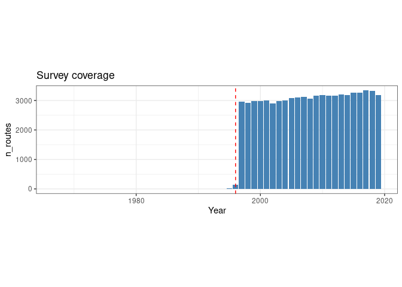

BBS_data_preparation.RmdThe BBS is a cooperative effort to monitor the status and trends of North American bird populations. Following a rigorous protocol, BBS data are collected by thousands of dedicated participants along thousands of randomly established roadside routes throughout the continent. Professional BBS coordinators and data managers work closely with researchers and statisticians to compile and deliver these population data and population trend analyses on more than 400 bird species, for use by conservation managers, scientists, and the general public. (BBS)
BBS data can downloaded in R by using the bbsAssistant package which provides routines for the downloading and handling of the complete dataset.
In order to use BBS data as a case study application for the application of ASCA to the analysis of large scale count data, a subset of the full dataset will be organized as a 2 factor investigation considering space and time as variables.
We start grabbing the latest version of the dataset
## This is grabbing the data, is getting them another time only if they are new
bbs <- grab_bbs_data()## Argument `sb_id` not specified. Using the ScienceBase identifier (sb_id) associated with the 2020 version of the BBS dataset:
## bbs_dir not specified. bbs dataset will be saved to data-in/5ea04e9a82cefae35a129d65
## Attempting to decompress and import files from data-in/5ea04e9a82cefae35a129d65
## Rows: 758 Columns: 9
## ── Column specification ────────────────────────────────────────────────────────────────────────────────────────────────────────────────────────────────────────
##
## chr (9): X1, X2, X3, X4, X5, X6, X7, X8, X9
##
## ℹ Use `spec()` to retrieve the full column specification for this data.
## ℹ Specify the column types or set `show_col_types = FALSE` to quiet this message.
## Joining, by = c("Seq", "AOU", "English_Common_Name", "Spanish_Common_Name", "ORDER", "Family", "Genus", "Species")The bbs object is a large list which contains almost everything, in particular:
For what we want to do we would like to know which routes (identified by an unique RTENO) has been regularly patrolled over the years
## calculate the number of routes patrolled for each year
year_route <- bbs$observations %>%
select(Year,RTENO) %>%
group_by(Year) %>%
nest() %>%
mutate(data = map(data, ~ unique(.x$RTENO))) %>%
mutate(n_routes = map_int(data,length)) %>%
arrange(Year)Let’s plot the number of routes
year_route %>%
ggplot() +
geom_col(aes(x = Year, y = n_routes), fill = "steelblue") +
geom_vline(xintercept = 1996, lty = 2, col = "red") +
theme_bw() +
theme(aspect.ratio = 0.3) +
ggtitle("Survey coverage")
The vertical line shows the 1996 limit. So a large scale regular patrolling started in 1997. We now restrict our analysis to the routes which have been consistently patrolled from 1997 onwards.
## filter the time
year_route <- year_route %>%
filter(Year > 1996)
## on these years the slot of common sites of observation is
common_routes <- Reduce(intersect, year_route$data)
## print the number of routes
length(common_routes)## [1] 604This is the number of routes which have been the subject of regular control over the years
Now we calculate the cumulative number of observations per species
and per year of the different species across the 50 different stops. We
also restrict to the routes listed in the common_routes
vector
## observations
x <- bbs$observations %>%
filter(Year > 1996) %>%
filter(RTENO %in% common_routes) %>%
mutate(n = rowSums(across(starts_with("Stop")))) %>%
select(!starts_with("Stop"))
## subset of the routes
routes_table <- bbs$routes %>%
filter(RTENO %in% common_routes)this is the content of the dataset:
head(x)## # A tibble: 6 × 9
## RouteDataID CountryNum StateNum Route RPID Year AOU RTENO n
## <int> <int> <int> <chr> <int> <int> <int> <chr> <dbl>
## 1 6227835 124 4 002 101 1997 40 12404002 3
## 2 6227835 124 4 002 101 1997 530 12404002 5
## 3 6227835 124 4 002 101 1997 540 12404002 248
## 4 6227835 124 4 002 101 1997 1250 12404002 1
## 5 6227835 124 4 002 101 1997 1320 12404002 30
## 6 6227835 124 4 002 101 1997 1350 12404002 8
head(routes_table)## # A tibble: 6 × 12
## CountryNum StateNum Route Route…¹ Active Latit…² Longi…³ Stratum BCR Route…⁴
## <int> <int> <chr> <chr> <dbl> <dbl> <dbl> <dbl> <dbl> <dbl>
## 1 840 2 001 ST FLO… 1 34.9 -87.6 14 27 1
## 2 840 2 010 MILLER… 1 33.2 -85.9 11 29 1
## 3 840 2 014 SMYER … 1 33.5 -86.6 13 28 1
## 4 840 2 022 HARRELL 1 32.4 -87.2 4 27 1
## 5 840 2 029 COTTON… 1 32.1 -85.1 4 27 1
## 6 840 2 043 BLOCTON 1 33.1 -87.1 13 27 1
## # … with 2 more variables: RouteTypeDetailID <dbl>, RTENO <chr>, and
## # abbreviated variable names ¹RouteName, ²Latitude, ³Longitude, ⁴RouteTypeID
## # ℹ Use `colnames()` to see all variable namesThis tibble, instead, holds the information about the different routes
The sf package can now be used to link the routes with
the Ecoregions
## read the shape file of the ecoregions
ecoregions <- read_sf("na_cec_eco_l1/NA_CEC_Eco_Level1.shp")
## assign the crs and validate the object
ecoregions <- st_transform(ecoregions ,crs=4326) %>%
st_make_valid()
## create a spatial object with the routes
routes_sf <- st_as_sf(routes_table, coords = c('Longitude', 'Latitude'), crs = st_crs(ecoregions))
## assign routes to ecoregions
routes_sf<- routes_sf %>% mutate(
intersection = as.integer(st_intersects(geometry, ecoregions)),
area = if_else(is.na(intersection), '', ecoregions$NA_L1NAME[intersection])
) To focus on large scale trends, we will restrict ourself only to ecoregions which contains more than ten observation routes
## identify the ecoregions which are well represented
area_id_in <- routes_sf %>%
count(area) %>%
filter(n > 10) %>%
pull(area)
## keep only the right routes
routes_sf <- routes_sf %>%
filter(area %in% area_id_in)The last step of the data preparation is restricting to the most observed 200 bird species
species_in <- x %>%
filter(RTENO %in% routes_sf$RTENO) %>%
count(AOU) %>%
arrange(desc(n)) %>%
slice(1:200) %>% ## keep only the 200 most abundant species
pull(AOU)And finally we create the observation table
## To get to the final dataset we also construct 5 consecutive year groups
x1 <- x %>%
filter(RTENO %in% routes_sf$RTENO) %>%
filter(AOU %in% species_in) %>%
left_join(routes_sf %>% select(RTENO,area)) %>%
mutate(period = cut(Year, breaks = 5)) %>%
group_by(area,period,AOU,RTENO) %>%
summarise(n = sum(n)) %>%
ungroup() %>%
pivot_wider(names_from = AOU, values_from = n, values_fill = 0)## Joining, by = "RTENO"
## `summarise()` has grouped output by 'area', 'period', 'AOU'. You can override using the `.groups` argument.